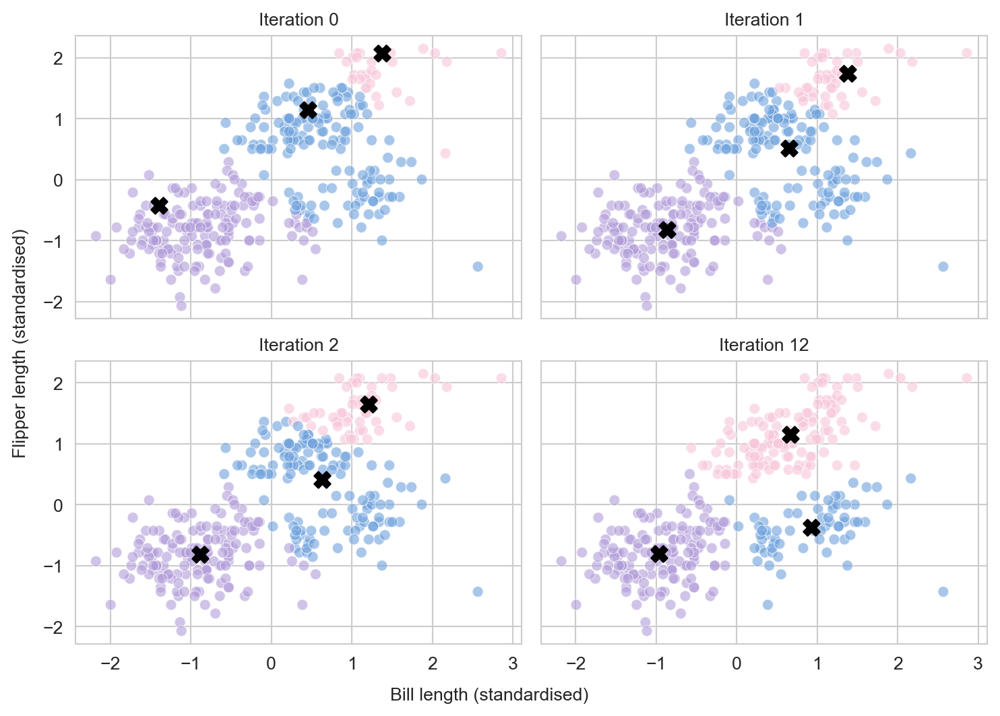
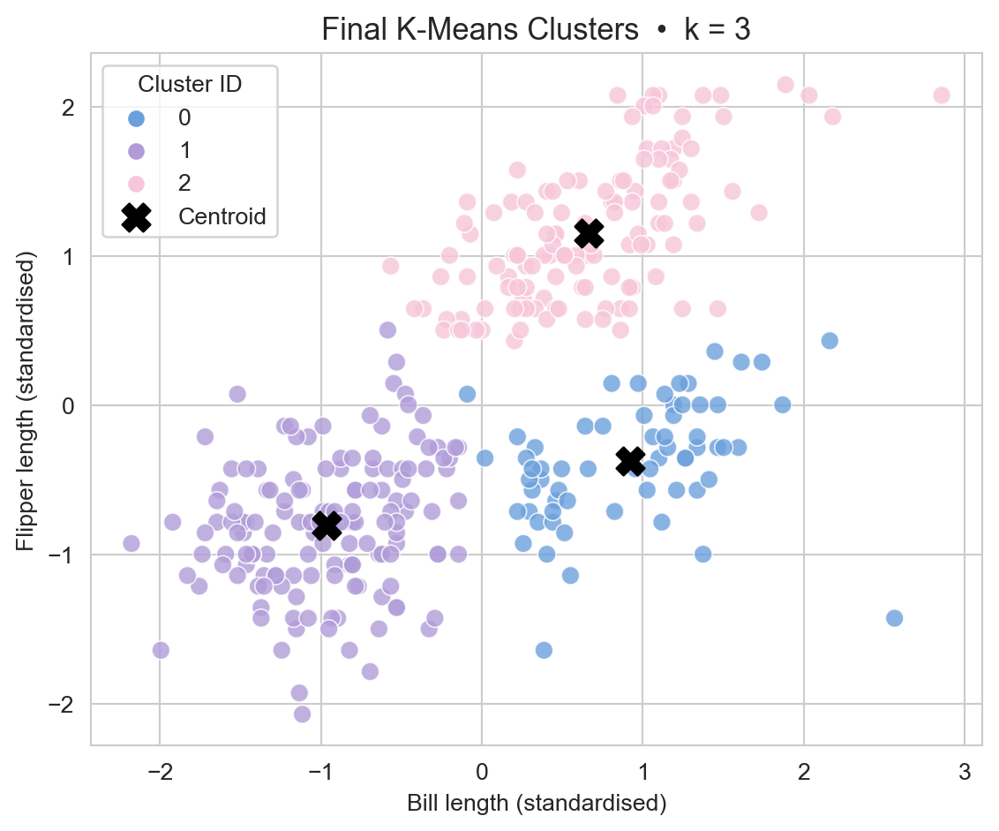
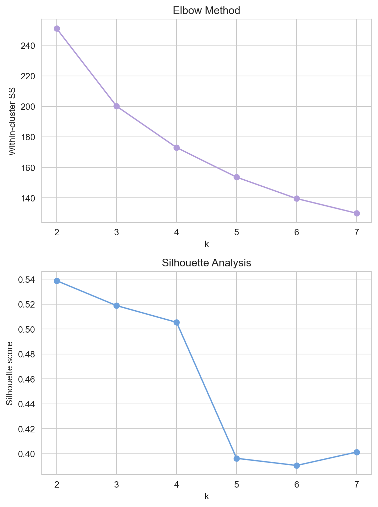
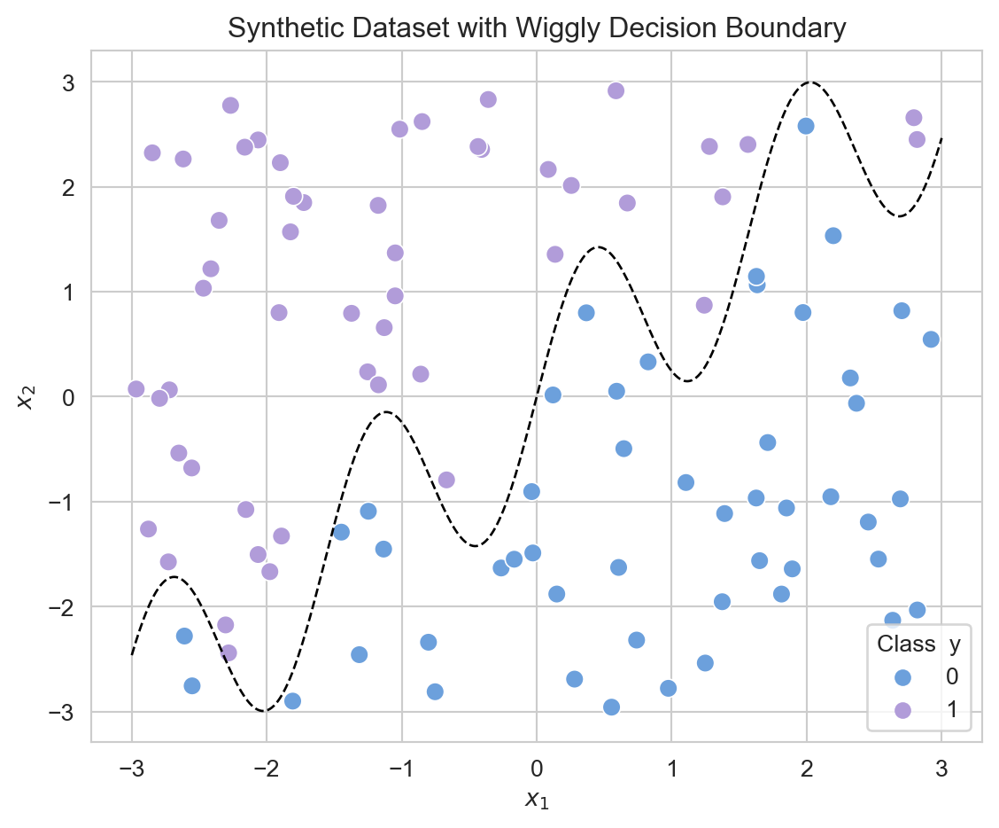
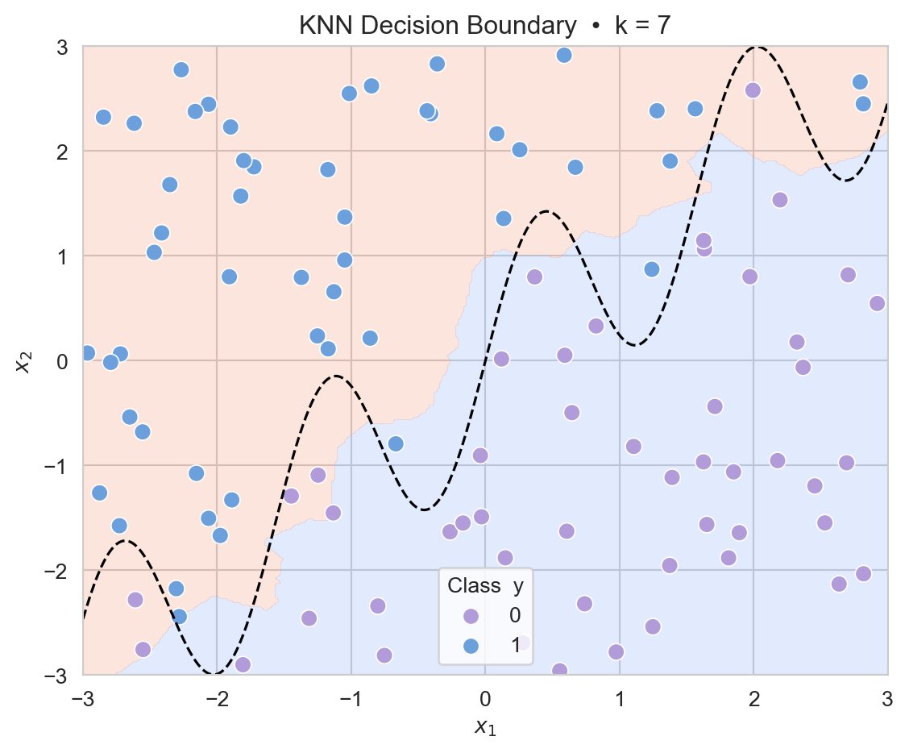
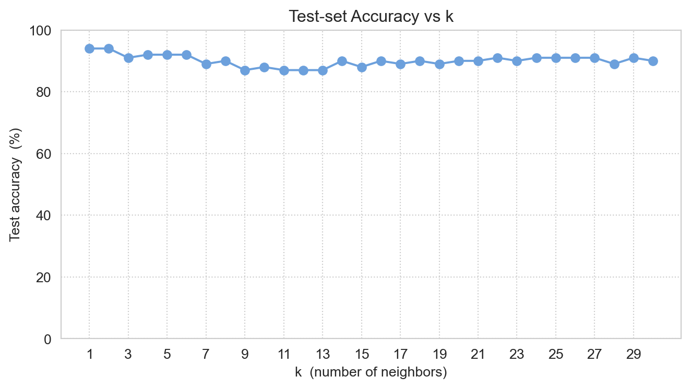

What problem does K-Means solve?
Imagine walking into an unfamiliar supermarket and wanting to arrange products into natural aisles without consulting a pre-defined category list. K-Means does exactly that for numeric data: it groups points so items in the same bin are closer to each other than to items in other bins.
How does the algorithm work?
Pick K — the desired number of bins (aisles, clusters).
Drop random centroids — initial “aisle markers.”
Assign every data point to the nearest centroid.
Update each centroid to the mean of its assigned points.
Repeat 3–4 until centroids hardly move.
The beauty is its simplicity: two distance calculations (assign & update) loop until the system relaxes.
Good to know before we build our own code to implement the k-means algorithm
Scale matters. Features measured in wildly different units will hijack the distance metric, so we’ll standardise first.
Initialization is random. Different starting points can yield slightly different results; we’ll fix a seed for reproducibility and later compare to scikit-learn’s implementation.
Choosing K is an art and a science. We’ll lean on two heuristics — the elbow (WCSS) and silhouette scores — to let the data, not our eyeballs, nominate a sensible value.
With that mental model in place, let’s first see how the penguin dataset looks like.
Variable
Unit / Levels
What it Captures
species
Adelie · Chinstrap · Gentoo
Ground-truth label of the bird’s taxonomic group; not used in clustering (kept only for a later sanity-check plot).
island
Biscoe · Dream · Torgersen
Capture location within the Palmer Archipelago; a rough habitat proxy (ignored in the 2-D K-Means demo).
bill_length_mm
millimetres
Length of the beak tip-to-base; often linked to diet and feeding style.
bill_depth_mm
millimetres
Thickness of the beak; complements bill length in distinguishing species.
flipper_length_mm
millimetres
Length of the flipper (wing); proxy for swimming power and foraging range.
body_mass_g
grams
Overall body weight; seasonal variation can reflect health or breeding stage.
sex
male · female (some missing)
Biological sex; males are typically slightly larger.
year
2007 – 2009
Expedition year when measurements were recorded; serves mostly as a timestamp.
Armed with just two numeric columns and a mental picture of how the algorithm should behave, we can now build K-Means from scratch.
The plan:
Standardise bill and flipper so distance units are comparable.
Write a minimal my_kmeans() that alternates assign → update.
Capture each centroid hop so we can watch convergence.
Benchmark our labels against sklearn.cluster.KMeans.
Step 1 | Select & Standardise the Two Features
First we isolate bill length and flipper length, drop any rows with missing values, and standardise them so one millimetre in bill length weighs the same as one millimetre in flipper length.
With X_std now giving every penguin equal footing in distance space, the next task is to let the points sort themselves out.
That means coding the heart of K-Means, an iterative assign → update routine that nudges centroids until our standardised bill-and-flipper matrix settles into stable clusters.
Code
import numpy as npdef my_kmeans(X, k, max_iter=100, tol=1e-4, random_state=42, record_steps=True):""" Lightweight, from-scratch K-Means. Parameters ---------- X : ndarray (n_samples × n_features) Standardised feature matrix (here: bill & flipper). k : int Desired number of clusters. max_iter : int Safety cap on iterations. tol : float Stop when the largest centroid move is smaller than this. random_state : int Seed for reproducible centroid seeding. record_steps : bool If True, return a full history of centroid positions. Returns ------- labels : ndarray, length n_samples Cluster assignment for every row. centroids : ndarray, shape (k, n_features) Final centroid coordinates. history : list[ndarray] Centroid positions after each update (len = iterations + 1). """ rng = np.random.default_rng(random_state) centroids = X[rng.choice(len(X), size=k, replace=False)] # ① random start history = [centroids.copy()] if record_steps elseNonefor _ inrange(max_iter):# ② assignment: send each point to its nearest centroid dists = np.linalg.norm(X[:, None] - centroids[None, :], axis=2) labels = dists.argmin(axis=1)# ③ update: recalc centroids as cluster means new_centroids = np.vstack([X[labels == j].mean(axis=0) for j inrange(k)])# ④ convergence checkif np.linalg.norm(new_centroids - centroids, axis=1).max() < tol: centroids = new_centroidsif record_steps: history.append(centroids.copy())break centroids = new_centroidsif record_steps: history.append(centroids.copy())return labels, centroids, history
Step 3 | Fire Up the Engine and Let It Converge
Our clustering motor is built, time to flip the switch. We’ll keep things simple for a first run: set k = 3, track every centroid update, and print a quick summary so we know how many iterations (and penguins per cluster) it took to stabilise.
Code
# ① choose k (we’ll justify “3” with diagnostics later)k_choice =3# ② run our custom K-Means, keeping the full centroid historylabels, centroids, history = my_kmeans(X_std, k_choice, record_steps=True)# ③ quick convergence reportprint(f"Converged after {len(history)-1} iterations.")# ④ sanity-check: how many birds per cluster?unique, counts = np.unique(labels, return_counts=True)for cid, cnt inzip(unique, counts):print(f"Cluster {cid}: {cnt} penguins")
Numbers alone say converged in 12 iterations—but eyeballs learn faster from pictures. Below we visualise the first three updates and the final configuration. Each panel re-colours the penguins according to the centroids of that step, so you can literally see how ownership of points shifts as the algorithm homes in on stable clusters.

The black X marks at Iteration 0 show three centroids dropped at random. Notice how the first hop (Iteration 1) is the largest, each centroid sprints toward the densest patch of nearby birds. By Iteration 2 the moves are shorter; the centroids are now fine-tuning their positions as ownership of borderline penguins swaps back and forth. The final panel (right-most) is where the dance stops: every bird is closer to its own centroid than to any rival, so K-Means declares victory.
Key take-aways from the migration movie:
Convergence speed. Twelve iterations isn’t bad for 333 birds; most of the “work” was done in the first two hops.
Cluster shapes. The orange cloud sits lower on the flipper axis, the blue cloud has longer bills and longer flippers, while the green group bridges the gap, mirroring what biologists know about Adelie, Gentoo, and Chinstrap morphologies.
Centroid stability. No centroid oscillates once it reaches its niche, confirming our tolerance parameter (tol = 1e-4) isn’t prematurely halting the loop.
With the motion picture digested, let’s freeze the frame and map the final clusters more cleanly before benchmarking against scikit-learn.
Step 5 | Final Cluster Map
The migration movie is fun, but decision-makers usually want a single, clean snapshot that shows where everything finally landed. Below we plot the last centroid positions and color each penguin by its permanent cluster ID.

Interpreting the Final Cluster Map
Three crisp clouds.
The purple group sits lower on the flipper axis and shorter on the bill axis—matching what biologists would expect for Adelie penguins.
The pink group occupies the upper-right corner with both the longest bills and flippers; this is textbook Gentoo morphology.
The blue group bridges the two extremes, consistent with Chinstrap measurements.
Well-separated centroids.
Each black X lands in the densest part of its cloud; there is no centroid awkwardly stranded between groups.
That visual gap implies good within cluster cohesion and clear between cluster separation.
Balanced segment sizes.
Cluster counts (64 · 146 · 123) show no single group dominates the sample, so downstream analyses, like segment-specific marketing or conservation policies won’t hinge on a tiny sliver of data.
Taken together, the picture reassures us that the algorithm didn’t just converge, it converged to biologically plausible clusters. Next we run a quick benchmark against scikit-learn to make sure our hand-rolled labels align with industry-standard K-Means.
Step 6 | Reality Check : Hand-Built vs. scikit-learn
Our clusters look sensible, but let’s test them against the industry workhorse: sklearn.cluster.KMeans. If both methods tell the same story, we can be confident our implementation is sound.
Code
from sklearn.cluster import KMeans as SKKMeansfrom sklearn.metrics import adjusted_rand_scorefrom scipy.spatial.distance import cdistimport numpy as npimport pandas as pd# 1️⃣ Fit scikit-learn K-Means on the *same* scaled matrixsk_model = SKKMeans(n_clusters=k_choice, random_state=42, n_init=10).fit(X_std)sk_labels = sk_model.labels_sk_cent = sk_model.cluster_centers_# 2️⃣ Compare labelings with Adjusted Rand Index (0 = random, 1 = perfect agreement)ari = adjusted_rand_score(sk_labels, labels)print(f"Adjusted Rand Index (DIY vs scikit-learn): {ari:.3f}")# 3️⃣ Pair each DIY centroid with its nearest sklearn neighbour and show the gappair_d = cdist(centroids, sk_cent).min(axis=1)gap_df = pd.DataFrame({"Cluster": range(k_choice),"Centroid gap (std-units)": np.round(pair_d, 4)})gap_df
Adjusted Rand Index (DIY vs scikit-learn): 1.000
Cluster
Centroid gap (std-units)
0
0
0.0
1
1
0.0
2
2
0.0
How Many Clusters?
With the hand-built K-Means now validated against scikit-learn, the natural follow-up question is: did we choose the rightk?
To let the data speak, we rely on two complementary yardsticks:
Within-Cluster-Sum-of-Squares (WCSS) – the “elbow” test.
Silhouette score – measures how well-separated the clusters are.
We’ll evaluate both metrics for k = 2 … 7 and inspect the resulting curves.
Code
from sklearn.metrics import silhouette_scoreimport pandas as pdimport numpy as npdef wcss(X, labels, cents):"""Sum of squared distances of points to their assigned centroid."""returnsum(np.linalg.norm(X[labels == j] - cents[j], axis=1).sum()for j inrange(len(cents)))diagnostics = []for k inrange(2, 8): # k = 2 → 7 lbls, cents, _ = my_kmeans(X_std, k, record_steps=False) diagnostics.append( {"k": k,"WCSS": wcss(X_std, lbls, cents),"Silhouette": silhouette_score(X_std, lbls)} )diag_df = pd.DataFrame(diagnostics)diag_df
k
WCSS
Silhouette
0
2
251.038381
0.538876
1
3
200.099648
0.518869
2
4
173.004244
0.505459
3
5
153.599779
0.396319
4
6
139.589940
0.390592
5
7
129.973434
0.401342
A quick scan of the numbers already hints at the answer:
WCSS shrinks rapidly from k = 2 → k = 3 and then tapers off, suggesting a classic “elbow” at 3.
Silhouette peaks at k = 2 but stays almost as high at k = 3; scores fall noticeably once we split the birds into four or more clusters.
To see those patterns more clearly and to defend our choice visually, we plot both metrics side-by-side next.

What the two curves are telling us
Clue
Observation
Implication
Elbow
Sharp drop from k = 2 → 3 (≈ 20 % reduction in WCSS), then a gentle slope thereafter.
Three clusters capture the bulk of the internal variance; adding a fourth yields only incremental benefit.
Silhouette
Highest score at k = 2 (≈ 0.54), but k = 3 is only a hair lower (≈ 0.52). Scores tumble once we split into 4+ groups.
Two clusters are the most “self-contained,” yet three clusters keep almost the same cohesion while offering finer segmentation.
Balancing the evidence
If our sole goal were maximum silhouette, we’d stop at k = 2 and call it a day.
However, the elbow flattening at k = 3 and the biological prior (three penguin species) argue that the slight silhouette sacrifice is worth the extra descriptive power.
Recommended choice: k = 3
It respects both heuristics, aligns with domain knowledge, and matches the clean cluster map we saw earlier.
2a. K Nearest Neighbors
After clustering the penguins, we now shift to a supervised task: can a simple, distance-based classifier recover a quirky decision boundary we embed in synthetic data?
K-Nearest Neighbors (KNN) is perfect here: no training equations, just geometry.
Before training the algorithm we need a sandbox. Rather than reuse penguins, we’ll sketch a synthetic two-feature world with a deliberately wiggly decision boundary. Think of it as a stylized market where customers above the curve churn ( y = 1 ) and those below stay loyal ( y = 0 ). KNN’s job will be to learn that curvy cutoff.
Create two numeric features
To see KNN learn from scratch, we first need a playground where the “true” rule is known but far from straight-line. We’ll draw 100 random “customers” in a two-dimensional space (x1, x2) and label them by a sine-wave boundary:
If a point sits abovex₂ = sin(4·x₁) + x₁, call it 1; otherwise call it 0.
That gives KNN something realistic yet non-linear to chew on.

The dashed curve is the ground-truth decision boundary. Points above the line (orange) are class 1; those below (blue) are class 0.
The boundary snakes upward: a gentle rise plus four sinusoidal bumps. Any straight-line model would struggle here, perfect terrain for KNN.
Class balance is reasonably even (≈ 50/50), so accuracy won’t be inflated by a dominant majority class.
Train KNN and Visualize the Decision Boundary
Now that we’ve defined the data and its labels, let’s see how well K-Nearest Neighbors (KNN) can trace the wiggly boundary using only proximity. KNN doesn’t learn a formula, it simply looks around. To classify a new point, it checks which class is most common among its k nearest neighbors. Let’s train a model with k = 7 and color the background to show which class KNN would predict in different regions of the feature space.

What the filled contour is telling us
Overall shape.
KNN with k = 7 captures the broad ups–downs of the sine-wave boundary: blue prediction zones hug most troughs, orange fills the peaks.
Smoothing effect.
Where the true boundary wiggles sharply, the KNN frontier rounds off, especially near x₁ ≈ −2 and x₁ ≈ +1.5.
That’s the price of asking seven neighbors for advice: you reduce noise but also blunt fine detail.
Isolated errors.
A few blue dots wander into orange territory (and vice-versa).
Those are points whose seven nearest neighbors straddle the curve; the vote simply goes with the local majority.
Take-away. k = 7 gives a reasonable, but not perfect match.
Smaller k would trace the wiggles more tightly (risking over-fit); larger k would smooth them away (risking under-fit).
Create a Hold-Out Test Set
A good classifier earns its stripes on unseen data, not the examples it learned from. So we’ll generate a fresh batch of 100 points using the same recipe as before, but flip the random seed to guarantee there’s no overlap with the training set.
Code
import numpy as np, pandas as pdfrom collections import Counter# ── new seed so points differ from the training sample ────────────────────────np.random.seed(24)n_test =100x1_t = np.random.uniform(-3, 3, size=n_test)x2_t = np.random.uniform(-3, 3, size=n_test)# same curvy boundaryboundary_t = np.sin(4* x1_t) + x1_ty_test = (x2_t > boundary_t).astype(int)test_dat = pd.DataFrame({"x1": x1_t, "x2": x2_t, "y": y_test})test_dat["y"] = test_dat["y"].astype("category")print("Test set shape:", test_dat.shape)test_dat.head()
Test set shape: (100, 3)
x1
x2
y
0
2.760104
1.614976
0
1
1.197072
-0.152494
0
2
2.999204
0.114679
0
3
-1.679596
2.665158
1
4
-0.833662
0.861152
1
Creating Our Own KNN
Let’s build our own KNN.
The rules are simple:
For every test point, measure its Euclidean distance to all training points.
Grab the k closest neighbors (we’ll keep k = 7 for consistency).
Assign the majority class among those neighbors.
def knn_predict(train_X, train_y, test_X, k=7): preds = []for x in test_X:# ① compute distances to all training points dists = np.linalg.norm(train_X - x, axis=1)# ② indices of k nearest idx = np.argsort(dists)[:k]# ③ majority vote votes = Counter(train_y[idx]).most_common(1)[0][0] preds.append(votes)return np.array(preds)# prepare arraystrain_X = dat[["x1", "x2"]].to_numpy()train_y = dat["y"].astype(int).to_numpy()test_X = test_dat[["x1", "x2"]].to_numpy()test_y = test_dat["y"].astype(int).to_numpy()# DIY predictionsy_pred_hand = knn_predict(train_X, train_y, test_X, k=7)
Our custom knn_predict function now returns a class label for each of the 100 hold-out customers.
Before handing the same task to scikit-learn, pause for two sanity checks:
Logic audit : we relied only on Euclidean distance, majority vote, and a fixed k. Nothing else slipped in (no prior boundary info, no data leakage).
Edge cases : ties are impossible with an odd k; if we had chosen an even number, we’d need a tie-breaker rule.
KNN - scikit-learn
Now, lets double check our own KNN with scikit-learn.
Perfect label match (1.000).
Every single prediction from our hand-coded loop matches scikit-learn’s output. That confirms the distance calculation, neighbor sorting, and majority vote logic are all spot-on.
Test accuracy ≈ 0.89.
On genuinely unseen customers the model classifies almost nine out of ten correctly, a solid score given the noisy, non-linear boundary.
Fine-Tuning the Neighborhood — Accuracy Curve for k = 1 … 30
So far we’ve stuck with k = 7, but the bias-variance trade-off in KNN depends heavily on that single integer:
Small k → very flexible, can hug every wiggle but risks over-fitting noise.
Large k → smoother boundary, less noise-sensitive, but may blur subtle patterns.
Let’s sweep k from 1 to 30, compute test-set accuracy each time, and let the curve reveal the sweet spot.
Code
import numpy as np, pandas as pdimport matplotlib.pyplot as pltacc_scores = []for k inrange(1, 31): preds = knn_predict(train_X, train_y, test_X, k=k) acc = (preds == test_y).mean() acc_scores.append({"k": k, "Accuracy": acc})k_df = pd.DataFrame(acc_scores)

The line hovers around 90 %–94 % across the full sweep, so KNN is generally robust on this task.
Peak accuracy occurs at k ≈ 2 (≈ 94 %). k = 1 ties for first but is more volatile; any tiny noise flip changes the vote.
Accuracy drifts downward once k exceeds ~10—evidence that a very large neighborhood blurs the nuanced wiggles we want to capture.
Recommended neighbor count:k = 2
It edges out larger choices in accuracy while keeping the decision boundary reasonably smooth.
Final Reflections : From Penguins to Synthetic Customers
Section
Core Lesson
Decision Made
K-Means (unsupervised)
Hand-coded loop plus elbow + silhouette showed three tight clusters, matching biological reality and scikit-learn.
k = 3
KNN (supervised)
DIY classifier matched scikit-learn exactly; grid search on hold-out data identified the most reliable neighborhood size.